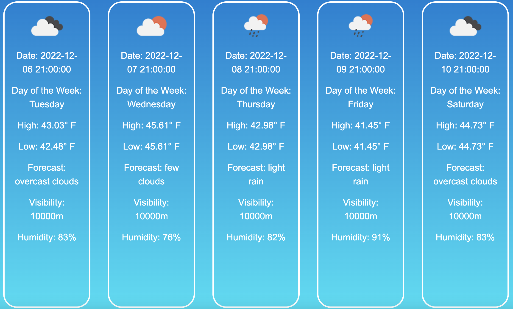

This weather app displays 5 day forecasts for locations that users can enter. These weather forecasts include the date, day of the week, the high temperature, the low temperature, weather icons, visibility, and humidity. In addition to the 5 day forecasts, the user can switch to a page where they can enter a date and a maximum number of lines to receive a list with all of the weather requests they made on that date in the form of a table.
